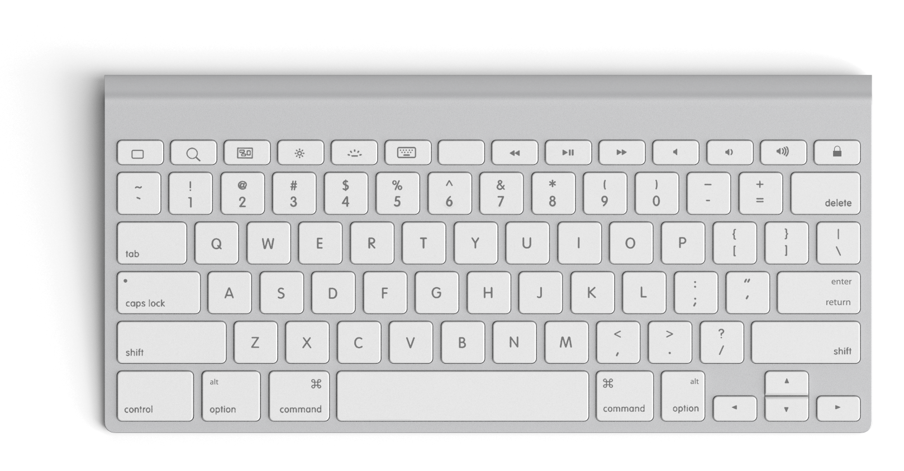
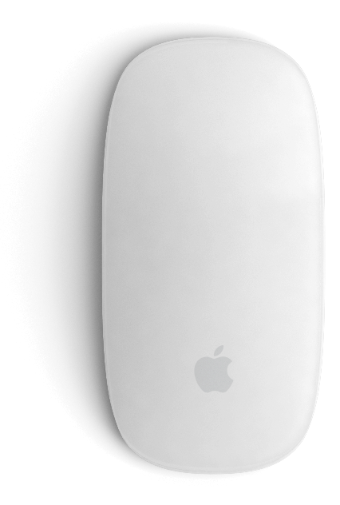
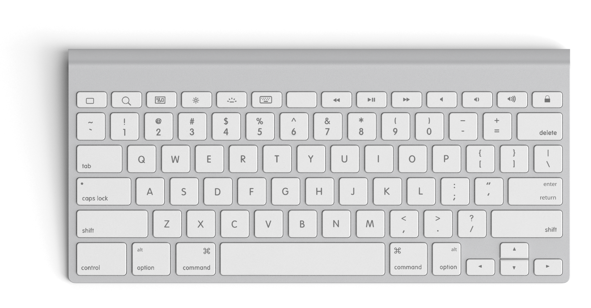
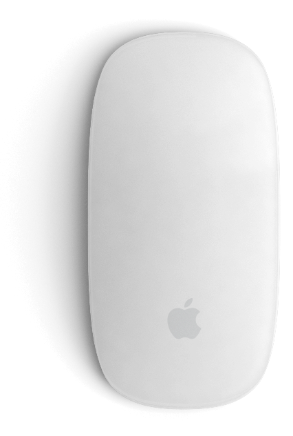

Patrik Svoboda
Hi there! My name is Patrick and I create stunning designs for websites and mobile applications. My dream is to be part of startups because I want to produce something fantastic for apps that are revolutionary.
Yep. I also can produce a little magic with coding. Just have a look.
 


